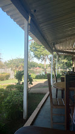
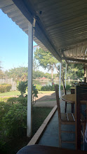

Larissa Maria Jaqueline Da Silva
Olá, me chamo Larissa Maria, porém prefiro ser chamada de Maria. Para nos conhecermos melhor, vou contar um pouco sobre mim.
SobreMim
Olá, sou a Larissa Maria, mas prefiro que me chamem somente de Maria. Sou natural de Xexeú, PE, e atualmente moro em Paulínia, no interior de SP. Estudo na escola Núcleo Habitacional José Paulino. Minha vida é bem corrida, ainda mais com trabalho, escola, curso e, ainda por cima, tem a academia, que eu não largo por nada. Sem contar que sou responsável por cuidar dos meus dois porquinhos-da-índia, da casa e dos meus três cachorros. Durante os finais de semana, trabalho no pesqueiro Santo Antônio e no restaurante Sudoeste para conseguir ter meu próprio dinheiro, sem precisar pedir para os meus pais. Sou uma pessoa que sonha muito e sonho bastante com o meu futuro. Atualmente, pretendo ser advogada criminalista, mas não é certeza de que eu de fato vá seguir essa profissão, pois as coisas mudam, não é mesmo? Pensamentos mudam e vontades também. Na escola, fiz muitas amizades maravilhosas que quero levar para o resto da minha vida, pessoas com quem convivo diariamente e que, mesmo nos dias ruins, conseguem me animar e fazem com que eu esqueça, pelo menos naquele momento, os meus problemas.❤️
PRINCIPAIS QUALIFICAÇÕES
-Disponibilidade imediata -Pontualidade -Bom atendimento -Fácil aprendizagem -Bom desenvolvimento em trabalho em equipe -Responsabilidade
Experiencia
Trabalho durante os finais de semana no restaurante Sudoeste. Lá, trabalho como garçonete e atendente. Sou a única garçonete e isso faz com que eu me estresse bastante com os meninos que trabalham lá, mas normalmente os dias são bem engraçados. Sempre, na hora do nosso almoço, compramos refrigerante e ficamos papeando.Habilidades
Minhas principais habilidades é a boa comunicacao,adoro me expressar com as pessoas atraves da fala,da interacao,alem disso tenho muita habilidade na cozinha,principalmente quando o assunto é praparar sobremesas
Hobbies
Aqui está a correção ortográfica das palavras e frases que você forneceu: - cozinhar - dançar - maquiar - estética (fazer sobrancelhas, cabelo e depilação) - vôlei - jogos de rua, como pega-pega - conversar sobre diversos assuntosFORMAÇÃO ACADÊMICA
ensino médio (2°grau) cursando 🏫
Abaixo estão algumas fotos do meu ciclo de amizade no dia a dia da escola e do meu ambiente de trabalho.👇🏼


 
